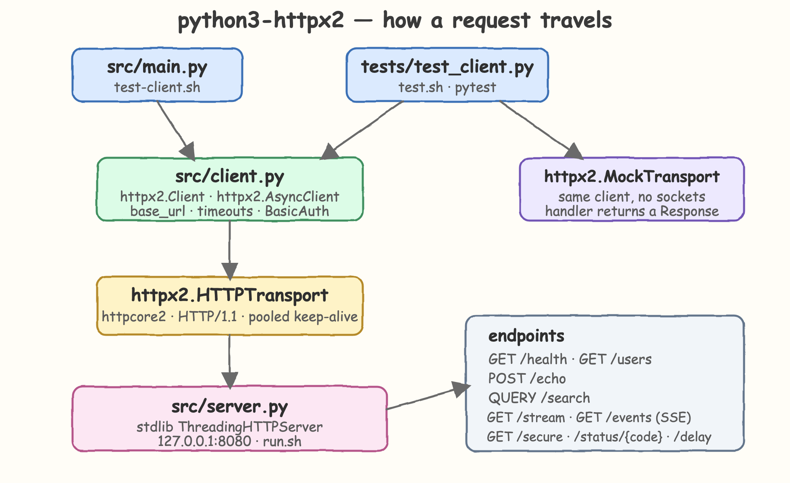

A proof of concept for
HTTPX2 on Python 3.14.6
HTTPX2 is Pydantic's continuation of HTTPX. This POC exercises the parts that are actually new —
the QUERY verb, first-class server-sent events, and the WebSocket entry point —
against a real HTTP server written with nothing but the Python standard library.
Why it exists
HTTPX has seen limited activity. Pydantic picked up stewardship as HTTPX2, keeping the API but shipping features HTTPX never had. This POC pins down what changed.
Why a stdlib server
A ThreadingHTTPServer speaks real HTTP/1.1 over a real socket, so the client is exercised end to end without pulling in a web framework.
What is verified
Every claim below is backed by a test: the QUERY verb reaches the wire, streaming never buffers, SSE decodes ids, and timeouts fire.
Architecture
One process per side. The client half is src/client.py; the server half is src/server.py.

src/client.py. The suite additionally swaps in MockTransport
to run the very same client functions with no socket at all.
Features
Each card maps to a function in src/client.py and a test in tests/test_client.py.
The QUERY verb
client.query() sends a safe, idempotent request that carries a body — filters that are too big for a URL no longer need a POST.
Server-sent events
client.sse() yields ServerSentEvent objects with event, id and json(). The separate httpx-sse package is no longer needed.
WebSockets
client.websocket() ships in the box behind the httpx2[ws] extra. Out of scope here because the stdlib server cannot speak the protocol.
Drop-in aliasing
httpx2.alias_httpx() makes import httpx resolve to httpx2 process-wide, so dependencies still on the old name share one client. Not called here — it cannot be undone.
Streaming responses
client.stream() hands back chunks as they arrive; touching .text raises rather than silently buffering the body.
Sync and async, one API
AsyncClient mirrors Client method for method, so the concurrent path reuses the same request shapes.
Timeouts everywhere
A connect/read timeout is set on the client and overridden per request, so a slow endpoint fails fast instead of hanging.
MockTransport
A handler function stands in for the network, which keeps client-side tests fast and free of port binding.
Endpoints
Served by src/server.py on 127.0.0.1:8080. No schema layer — plain JSON in, plain JSON out.
| Method | Path | Response | Exercises |
|---|---|---|---|
| GET | /health | {"status": "ok"} | base URL, default headers |
| GET | /users | the four seeded users | JSON decoding |
| POST | /echo | the body and the user agent it saw | json= request bodies |
| QUERY | /search | users matching every key in the body | the QUERY verb |
| GET | /stream?lines=N | N chunked plain-text lines | streamed reads |
| GET | /events?count=N | N text/event-stream events | SSE decoding |
| GET | /secure | 401 without credentials, else the caller | BasicAuth |
| GET | /status/{code} | exactly that status code | raise_for_status |
| GET | /delay?seconds=N | ok, after sleeping N seconds | read timeouts |
Code
The whole client is one flat module of small functions — no wrapper classes, no retry framework.
TIMEOUT = httpx2.Timeout(5.0, connect=2.0)
HEADERS = {"user-agent": "httpx2-poc"}
def build(base_url, **kwargs):
return httpx2.Client(base_url=base_url, timeout=TIMEOUT, headers=HEADERS, **kwargs)
def search(client, criteria):
return client.query("/search", json=criteria).raise_for_status().json()["matches"]
def events(client, count):
with client.sse("/events", params={"count": count}) as source:
return [(event.event, event.json()) for event in source]
def do_QUERY(self):
if urlparse(self.path).path != "/search":
self.send_json(404, {"error": "not found"})
return
criteria = self.read_json()
matches = [u for u in USERS if all(u.get(k) == v for k, v in criteria.items())]
self.send_json(200, {"matches": matches})
def test_query_is_sent_as_the_query_verb_not_as_a_get(http):
response = http.query("/search", json={"lang": "rust"})
assert response.request.method == "QUERY"
assert [u["name"] for u in response.json()["matches"]] == ["graydon"]
def test_streaming_yields_chunks_without_buffering_the_body(http):
with http.stream("GET", "/stream", params={"lines": 3}) as response:
assert "content-length" not in response.headers
with pytest.raises(httpx2.ResponseNotRead):
response.text
assert [line for line in response.iter_lines() if line] == ["line 1", "line 2", "line 3"]
Run it
Four scripts, one job each.
./build.sh ./test.sh ./test-client.sh PORT=9000 ./run.sh
health {'status': 'ok'}
users ['ada', 'linus', 'guido', 'graydon']
echo {'received': {'lang': 'python', 'version': '3.14.6'}, 'agent': 'httpx2-poc'}
query search ['ada', 'guido']
stream ['line 1', 'line 2', 'line 3', 'line 4']
sse [('tick', {'seq': 1, ...}), ('tick', {'seq': 2, ...}), ('tick', {'seq': 3, ...})]
basic auth {'user': 'admin', 'scope': 'poc'}
status error 503
read timeout True
async concurrent ['ok', 'ok', 'ok', 'ok', 'ok']
- build.sh creates
.venvwith Python 3.14.6, installs pinned dependencies, and byte-compiles the sources. - run.sh starts the stdlib server in the foreground, honouring
PORT. - test.sh runs pytest against a server bound to an ephemeral port inside the suite.
- test-client.sh starts a server if the port is free, walks every client scenario, then shuts it down.